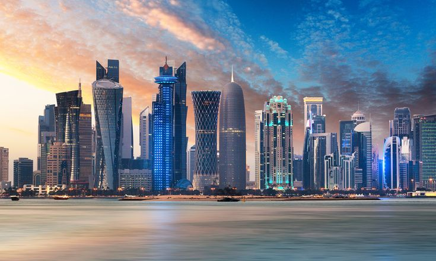

QATAR • INVESTMENT • OPPORTUNITY
Qatar continues positioning itself as one of the Gulf region's most attractive investment destinations through infrastructure development, economic diversification and long-term strategic planning.
Qatar combines political stability, strong infrastructure, strategic geography and a high-income economy. The country has invested heavily in transportation, technology, tourism and urban development, creating opportunities across multiple sectors.
Its location between Asia, Africa and Europe makes it an attractive gateway for regional and international business.
Qatar's property market continues evolving through new residential communities, mixed-use developments and waterfront projects.
Areas such as Lusail, The Pearl and West Bay remain among the country's most recognized destinations for real estate investment and long-term growth.
The government continues supporting entrepreneurship, innovation and foreign investment. Business-friendly initiatives and modern infrastructure help create opportunities for startups and established companies alike.
Technology, consulting, logistics and professional services remain particularly attractive sectors.
Digital transformation, smart infrastructure and emerging technologies are becoming increasingly important to Qatar's future growth strategy.
Investment in innovation ecosystems and technology-focused industries continues creating opportunities for entrepreneurs and investors.
Qatar has expanded its tourism sector through major events, cultural attractions, luxury hospitality projects and international marketing initiatives.
Tourism-related businesses continue benefiting from increased visitor numbers and infrastructure improvements.
Major investments in transportation, logistics, utilities and urban development continue strengthening Qatar's competitiveness and economic resilience.
Infrastructure projects create opportunities across engineering, construction, technology and professional services.
Investors benefit from modern infrastructure, strong connectivity, economic stability and a long-term national development strategy focused on diversification and sustainability.
Qatar's ability to attract international talent and capital continues supporting future growth.
Qatar's investment environment is expected to remain attractive as the country continues expanding beyond traditional sectors and building a knowledge-based economy.
For investors seeking exposure to one of the Gulf's most ambitious growth stories, Qatar offers opportunities across a broad range of industries.